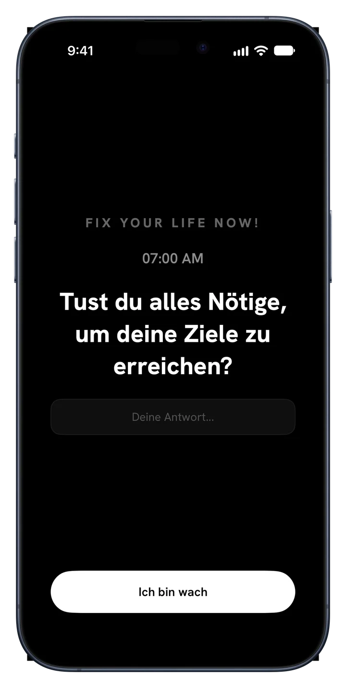
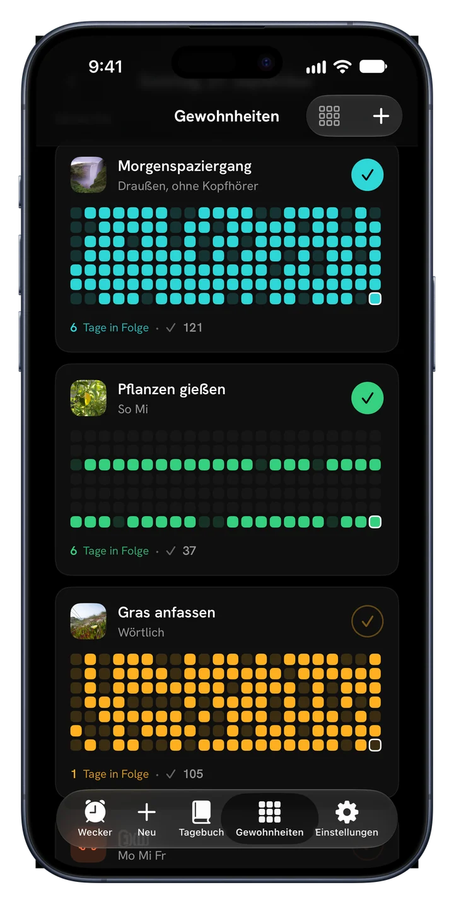
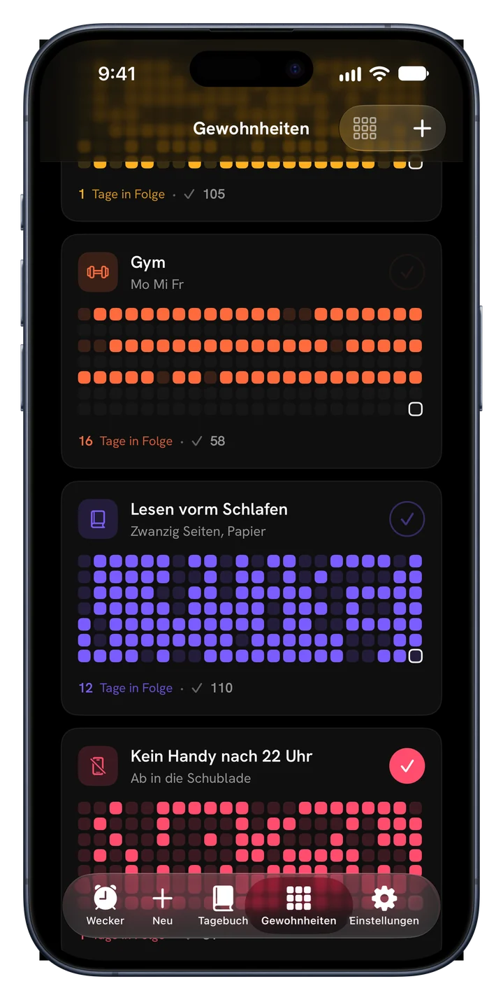
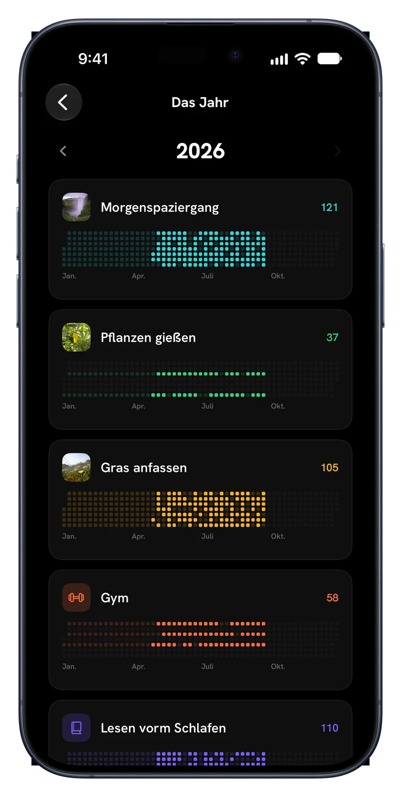
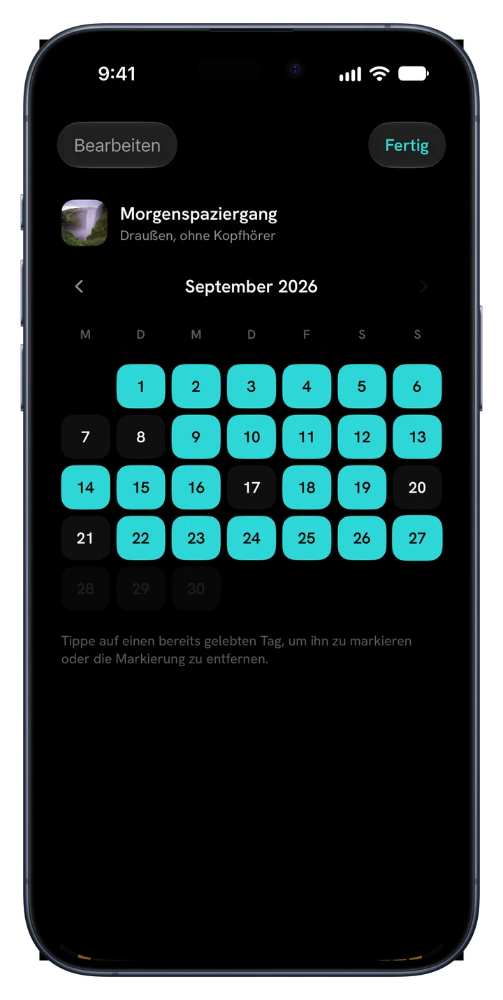
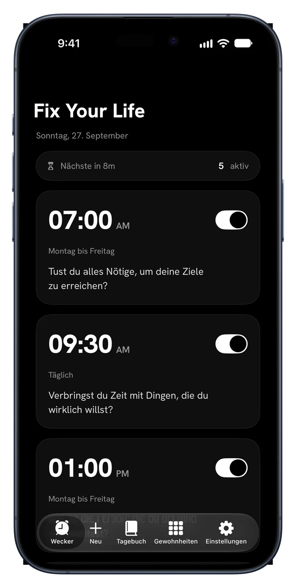
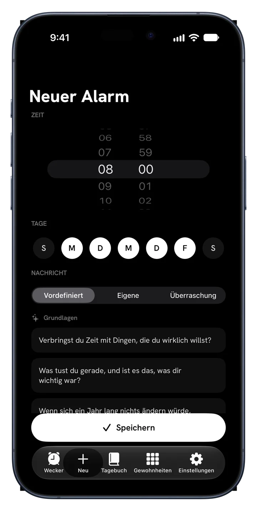
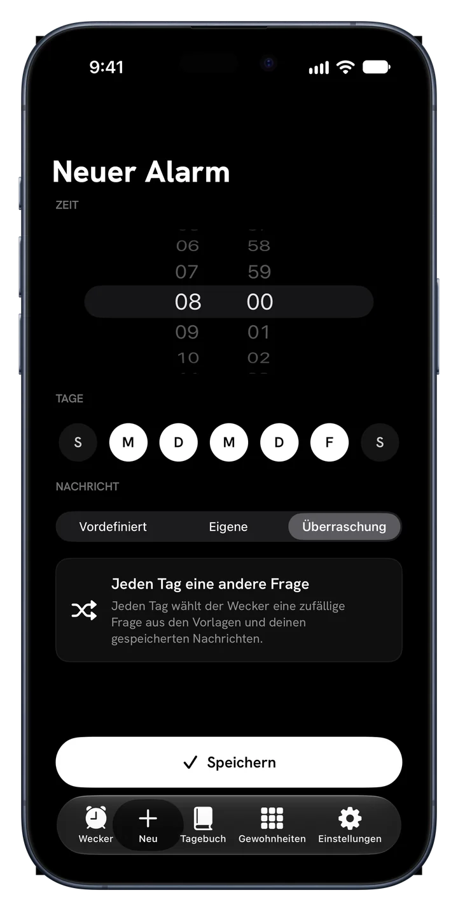
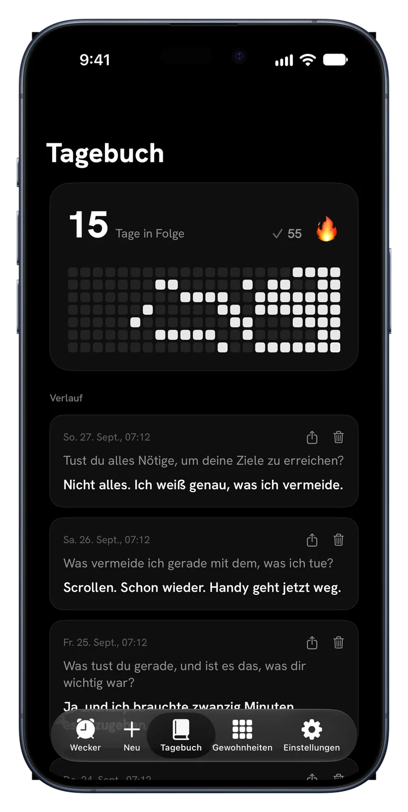
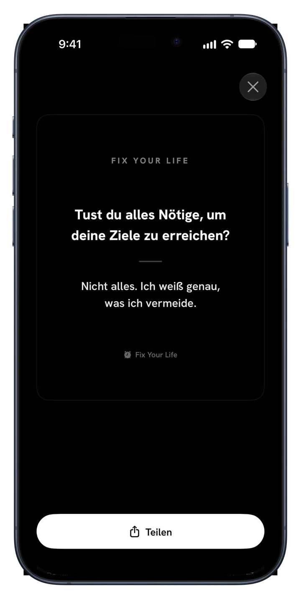

Morgenspaziergang
TäglichEin halbes Jahr, ein Quadrat pro Tag
Fix Your Life weckt dich mit einer Frage, die du nicht wegdrücken kannst, und hilft dir, bei dem zu bleiben, was du dir vorgenommen hast: Gewohnheiten mit deinen eigenen Fotos, Serien und dein ganzes Jahr in Farbe.
Kostenloser Download · Ein Alarm und eine Gewohnheit gratis, für immer · Keine Werbung. Nie.



Neu · Gewohnheiten
Füge hinzu, was du wirklich durchziehen willst. Gib jedem ein Gesicht, hake es ab und sieh zu, wie die Serie in ihrer eigenen Farbe wächst.


Ein halbes Jahr, ein Quadrat pro Tag
Ein halbes Jahr, ein Quadrat pro Tag
Ein halbes Jahr, ein Quadrat pro Tag
Die App im Detail
Jeder Bildschirm hat nur eine Aufgabe: dich für dein eigenes Leben aufzuwecken.

Alarme mit Sinn
Stelle Alarme für jede Uhrzeit und jeden Tag. Jeder trägt eine Frage statt eines Tons, den du wegdrückst und vergisst. Antworte in einer Zeile, und der Tag beginnt ehrlich.

34 Fragen · 6 Pakete
Grundlagen, Ambition, Zeit & Sterblichkeit, Identität, Ehrlicher Spiegel und Lebendigkeit. Das sind keine Affirmationen. Das sind die Fragen, denen du ausgewichen bist. Oder schreib deine eigenen.

Überraschungsmodus
Wiederholung wird zum Hintergrundrauschen. Der Überraschungsmodus wählt für jeden Wochentag eine neue Frage, damit der Alarm nie an Schärfe verliert.

Ein Tagebuch, das zuerst fragt
Jede Antwort wird mit Frage und Datum gespeichert. Serie, Heatmap und Verlauf sind da, und Beständigkeit wird etwas, das du sehen kannst.

Widgets
Deine Serie und die Frage des Tages, damit du als Erstes das siehst, dem du ausgewichen bist.

Teile deine Erfolge
Mach aus jeder Antwort eine schlichte Karte und teile sie, wo du willst. Deine Antworten beweisen, dass du da warst, und manche verdienen Tageslicht.
So funktioniert's
Dein Plan steht, bevor die erste Minute um ist.
Morgen, Disziplin, Gesundheit, Fokus, Bildschirmzeit oder Schlaf. Dein Plan baut darauf auf.
Wähle die Uhrzeit. Er klingelt jeden Tag mit einer Frage, die zu deiner Wahl passt.
Klein, täglich und deine. Füge ein Foto hinzu, wähle eine Farbe, hake sie ab.
Jeder gehaltene Tag lässt ein Quadrat leuchten. Verpasst du einen, sieht man es. Bleib dran, und das Jahr wird bunt.
Preise
Ein Alarm und eine Gewohnheit sind für immer gratis, mit allen Funktionen. Premium ist für einen ganzen Tag davon.
$0 für immer
Ohne Karte, ohne Test
$17.99 / Jahr
3 Tage gratis · etwa $0.35 pro Woche
$39.99 einmalig
Eine Zahlung, kein Abo
Auch wöchentlich für $4.99 erhältlich. Preise in US-Dollar; der App Store zeigt den Preis für dein Land. Der Gratis-Test gilt für neue Abonnenten des Jahresplans.
FAQ
„Wenn jemand die letzten zwei Stunden deines Lebens filmen würde, würde er schließen, dass du willst, was du sagst, dass du willst?“
Eine Frage am Morgen. Ein Quadrat pro Tag. So wechselt ein Jahr die Farbe.
Laden imApp StoreKostenloser Download · 45 Sprachen · Keine Werbung. Nie.